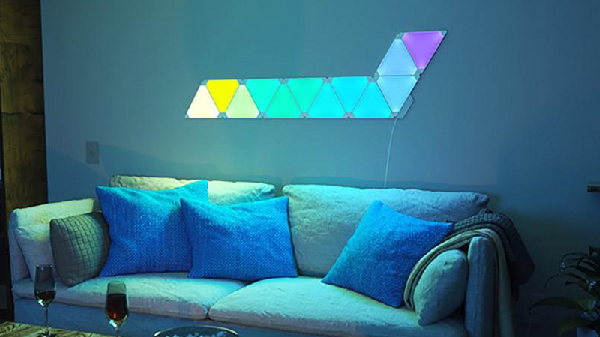
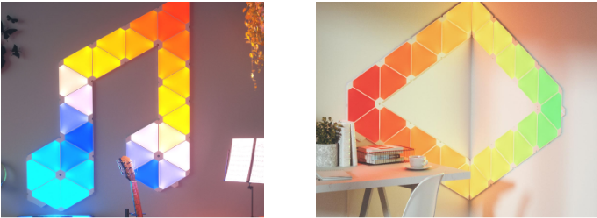
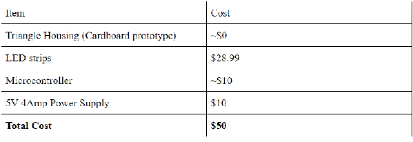
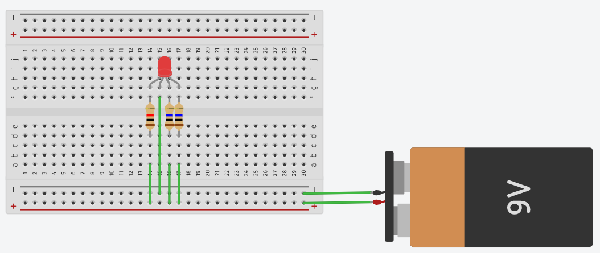

##Blog 1: Nanoleaf Aurora
Hi there, my name is Phillip Van and I work for the Umass All-Campus Makerspace. Although I have no experience with coding or building circuits, I’ve always wanted to try to make my own Nanoleaf Aurora. As a result, this blog will document all of my essential research and findings for you to follow along with and hopefully this will help some of you guys create your own.

###Background: What is the Nanoleaf Aurora
The Nanoleaf Aurora is essentially a system of triangular light fixtures with rainbow LEDs (RGB LEDs) inside of them. Each triangle is an individual leaf that can connect with other “leaves”. As a result, the Nanoleaf is an extremely modular and flexible light fixture that provides a lot of freedom for cool designs

Here’s the catch, for a set of just nine triangles, the total cost is $200. On the other hand, a single 16.4 ft RGB LED strip costs less than $30 and would likely cover more room. I figured with the help of google, the Nanoleaf could easily be recreated for a fraction of the cost, below are my initial findings.
###Research:
Googled: Nanoleaf DIY
Findings: A lot of people have done the same projects, creating their own Nanoleaf setup. It seems to be a fairly simple product, consisting of some triangle housings, some LEDS, and a small microcontroller (mini computer).
As a proof of concept that this project will be more economical than just buying the Nanoleaf here is a general bill of materials.

With a $50 price tag, our DIY Nanoleaf will cost approximately a quarter of the original price. In addition, many of these are one time purchases, creating more “leaves” will only make this project more economical.
###Sneak peak! Come back in the next blog post, where I play with RGB LEDs to learn how they work! 